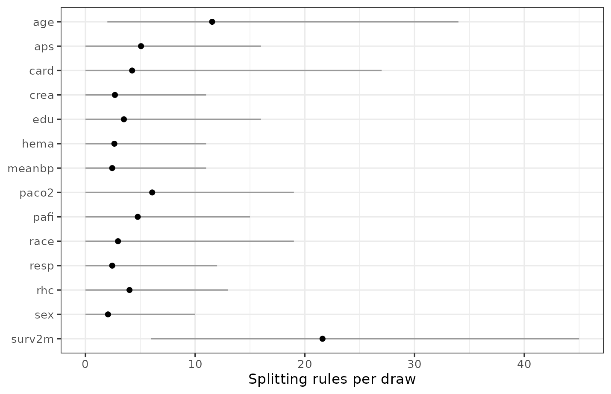

Introduction
A fitted forest spends its splitting rules on some predictors and not
others, and counting how it spends them is the usual measure of variable
importance for BART. variable_importance() reports the
count.
This vignette covers what that number means, how to tell whether a difference in it is real, and the limits of what it measures. The last part matters more than the first: variable importance is the most over-read output in machine learning, and the failure modes are specific and checkable.
In this guide we will first read the three statistics
variable_importance() returns, and then calibrate them by
adding predictors we know to be pure noise. Next we’ll look at the two
situations that most affect how the table should be read: a strong
signal, where the separation between signal and noise is sharp, and
correlated predictors, where the ranking is confidently wrong. Finally
we’ll cover what importance does not measure and what to make of the
advice to reduce the number of trees when using BART to select
variables.
Split Counts and Usage Proportions
(variable_importance())
set.seed(2026)
fit <- bartisan(model, data = rhc, family = binomial(), chains = 4)
imp <- variable_importance(fit)
imp
#> Variable importance
#>
#> variable prop_used prop_splits splits
#> surv2m 1.000 0.284 21.6
#> age 1.000 0.152 11.5
#> paco2 0.968 0.080 6.1
#> rhc 0.935 0.053 4.0
#> aps 0.891 0.067 5.1
#> pafi 0.889 0.063 4.8
#> edu 0.749 0.046 3.5
#> card 0.715 0.056 4.3
#> hema 0.640 0.035 2.6
#> meanbp 0.632 0.032 2.4
#> crea 0.630 0.035 2.7
#> race 0.582 0.039 3.0
#> resp 0.562 0.032 2.4
#> sex 0.521 0.027 2.1
#>
#> ℹ splits_lower and splits_upper hold the 95% interval, not shown above.The output has six columns, of which print() shows four,
and the three read first answer different questions.
prop_used is the proportion of draws in which the
predictor received at least one rule, and it is the column to read
first: under the default prior it behaves like a posterior probability
that the predictor belongs in the model, which makes it the one to use
when the question is which variables to keep.
prop_splits is the predictor’s share of all the
splitting rules in the forest. It is the column to use when two fits are
being compared, for the reason the section on num_trees
below gives.
splits is the average number of splitting rules the
forest gives a predictor in one posterior draw; it says how much of the
fitted structure the predictor accounts for. Its interval is in the
returned data frame as splits_lower and
splits_upper, and the print() method leaves it
out of the displayed table to keep the ranking readable.
The reason it behaves that way is the prior. By default (i.e., with
sparsity = TRUE) the variable a rule splits on is drawn
from a Dirichlet-distributed set of probabilities (Linero
2018), which lets the forest concentrate on a few predictors
and drop the rest entirely. A predictor that contributes nothing can
fall to prop_used near zero, which is not possible under
classic BART, where every predictor keeps a fixed share of the splitting
probability.
The prognostic score and the illness measures sit at the top, which is what we would expect; at the other end, several predictors are used in only about half the draws.
For a ranking this long the picture is easier to read than the table,
and plot() draws it:
plot(imp)
For a model wider than this one, subsetting first is what keeps the
picture readable: plot(head(imp, 10)) shows the top
ten.
And when the question is not one the summary answers,
draws = TRUE returns the counts themselves, one row per
posterior draw, so any comparison can be made directly. The posterior
probability that the forest spends more rules on aps than
on meanbp, for instance, is a proportion of draws:
counts <- variable_importance(fit, draws = TRUE)
mean(counts[, "aps"] > counts[, "meanbp"])
#> [1] 0.67That is worth doing before reading much into a difference in the table: two predictors adjacent in the ranking are usually not distinguishable, and this is how to find out.
Calibrating With Noise Predictors
Is a middling prop_used low? The table cannot say.
Before reading anything into the bottom of it, we should check what a
predictor that certainly does not matter looks like on these data, which
means adding a few.
set.seed(11)
rhc_noise <- rhc
for (j in 1:3) rhc_noise[[paste0("noise", j)]] <- rnorm(nrow(rhc_noise))
set.seed(2026)
fit_noise <- bartisan(update(model, . ~ . + noise1 + noise2 + noise3),
data = rhc_noise, family = binomial(), chains = 4)
variable_importance(fit_noise)
#> Variable importance
#>
#> variable prop_used prop_splits splits
#> surv2m 1.000 0.199 15.2
#> age 1.000 0.132 10.1
#> paco2 0.966 0.083 6.3
#> pafi 0.957 0.065 5.0
#> aps 0.928 0.082 6.3
#> rhc 0.924 0.055 4.2
#> card 0.788 0.036 2.7
#> noise1 0.777 0.049 3.7
#> edu 0.776 0.042 3.2
#> meanbp 0.730 0.040 3.0
#> hema 0.719 0.036 2.8
#> crea 0.712 0.046 3.5
#> noise2 0.673 0.028 2.1
#> noise3 0.666 0.032 2.5
#> race 0.590 0.026 2.0
#> sex 0.569 0.021 1.6
#> resp 0.568 0.028 2.1
#>
#> ℹ splits_lower and splits_upper hold the 95% interval, not shown above.The noise variables do not sort to the bottom. They land in the middle of the table, above several of the real predictors, and that is the answer to the question: the lower half of this table carries no information, because a predictor ranked below a variable that is literally random cannot be said to matter less than it.
Read the gap rather than the ranking. The predictors at the top sit well clear of the noise controls and can be said to matter, while everything from about the middle down is indistinguishable from random numbers on this sample, which is a more useful conclusion than an ordering and one the table alone would not have given us.
This technique costs three lines and settles the question; we recommend it whenever an importance table is going to be interpreted.
Separation With a Stronger Signal
The failure above is a property of these data rather than of the
method: with more data and a stronger signal, the separation is sharp.
Below we use the Friedman function, in which x1 through
x5 enter the outcome and x6 through
x10 are noise, at 500 observations.
friedman <- function(n) {
x <- as.data.frame(matrix(runif(n * 10), n, 10))
names(x) <- paste0("x", 1:10)
x$y <- 10 * sin(pi * x$x1 * x$x2) + 20 * (x$x3 - 0.5)^2 +
10 * x$x4 + 5 * x$x5 + rnorm(n)
x
}
set.seed(7)
fit_fr <- bartisan(y ~ ., data = friedman(500), family = gaussian())
variable_importance(fit_fr)
#> Variable importance
#>
#> variable prop_used prop_splits splits
#> x2 1.000 0.418 34.1
#> x1 1.000 0.219 17.8
#> x3 1.000 0.186 15.2
#> x4 1.000 0.123 10.1
#> x5 1.000 0.051 4.2
#> x8 0.056 0.001 0.1
#> x7 0.055 0.001 0.1
#> x10 0.045 0.001 0.0
#> x6 0.040 0.001 0.0
#> x9 0.021 0.000 0.0
#>
#> ℹ splits_lower and splits_upper hold the 95% interval, not shown above.The five real predictors sit at 1.00 and four of the five noise predictors near zero. The fifth sits above the other noise variables and still well below the real ones, which is a useful reminder that even a clean separation has a straggler: a noise variable will occasionally be picked up, and a single moderate value is not evidence of anything. The gap that matters runs from the top of the noise to 1.00, and it is wide.
There is no threshold that is correct in general, so we look for the gap, cut inside it, and check that the conclusion does not depend on exactly where.
Correlated Predictors
This is the failure mode most likely to mislead, because it produces a confident and wrong answer rather than an uninformative one.
set.seed(5)
n <- 400
cd <- data.frame(x1 = runif(n))
cd$x1_copy <- cd$x1 + rnorm(n, sd = 0.01) # almost the same variable
cd$x2 <- runif(n)
cd$x3 <- runif(n)
cd$y <- 3 * cd$x1 + rnorm(n, sd = 0.3) # only x1 is in the truth
fit_corr <- bartisan(y ~ ., data = cd, family = gaussian())
variable_importance(fit_corr)
#> Variable importance
#>
#> variable prop_used prop_splits splits
#> x1_copy 1.000 0.660 50.3
#> x1 0.797 0.317 24.3
#> x3 0.445 0.017 1.3
#> x2 0.152 0.006 0.4
#>
#> ℹ splits_lower and splits_upper hold the 95% interval, not shown above.The outcome depends on x1. The forest spent most of its
splitting rules on x1_copy and most of the rest on
x1, so read as a ranking, this table puts the variable that
is not in the truth above the one that is.
Nothing has gone wrong with the fit: the two variables carry the same information, so a tree that splits on either fits equally well, and the forest divided the rules unevenly. Predictions are unaffected; what is affected is any statement about which variable matters.
The same thing happens to the effects:
library(marginaleffects)
avg_comparisons(fit_corr, variables = c("x1", "x1_copy"))
#>
#> Term Estimate 2.5 % 97.5 %
#> x1 0.382 -0.0409 1.28
#> x1_copy 0.998 0.1900 1.53
#>
#> Type: response
#> Comparison: +1The copy takes most of the association; the original’s interval covers zero. Moving both together, which is what a change in the underlying quantity would mean, recovers the truth:
lo <- transform(cd, x1 = 0.25, x1_copy = 0.25)
hi <- transform(cd, x1 = 0.75, x1_copy = 0.75)
drawn <- rowMeans(predict(fit_corr, newdata = hi, draws = TRUE) -
predict(fit_corr, newdata = lo, draws = TRUE))
round(c(estimate = mean(drawn), quantile(drawn, c(0.025, 0.975))), 3)
#> estimate 2.5% 97.5%
#> 1.59 1.46 1.73The true difference over that range is 1.5, so the model knows the relationship; it just cannot say which of two identical columns it belongs to.
The practical rule is to treat a set of correlated predictors as one unit: we decide in advance which variables measure the same underlying thing, and then report and move them together.
The Limits of a Usage Ranking
It is not an effect size. How often a predictor is
split on and how much it moves the outcome are different quantities, and
they can disagree in both directions; a predictor with a small effect
over a range that gets split repeatedly will show high usage. When the
question is how much the outcome changes,
partial_dependence() shows how the prediction moves with
the predictor and avg_comparisons() answers it as a
contrast, both with an interval. See
vignette("effects").
It is not a test. prop_used is a
posterior probability under a particular prior (i.e., the Dirichlet
sparsity prior). It has no error rate attached, and the choice of cutoff
is left to the analyst. The noise-control technique above is the closest
thing to a calibration of that cutoff, and it is informal.
It is not causal. A ranking of predictors describes
this fitted function on this sample. It says nothing about what would
happen if any of them were changed, and a variable can rank highly
because it is a consequence of the outcome, a proxy for a confounder, or
correlated with something that matters. See
vignette("causal").
The Number of Trees (num_trees)
A recommendation that circulates is to reduce the number of trees when using BART for variable selection. It comes from Chipman et al. (2010), who observe that counting splits works poorly with many trees because “the redundancy offered by so many trees tends to mix many irrelevant predictors in with the relevant ones”, and that predictors compete for splits when the forest is small.
The advice is correct for classic BART and largely unnecessary here.
Measured on the Friedman function at 500 observations over three
replicates, the mean prop_used for the five noise
predictors was:
| Trees | sparsity = FALSE | sparsity = TRUE (default) |
|---|---|---|
| 10 | 0.28 | 0.09 |
| 20 | 0.50 | 0.08 |
| 50 | 0.95 | 0.09 |
| 100 | 1.00 | 0.14 |
Without the sparsity prior the advice is essential: at 50 trees the
noise predictors are used in 95% of draws and cannot be told apart from
the real ones. With the prior, which is on by default
(sparsity = TRUE), they stay near zero at every tree count.
The recommendation addresses the same problem the prior addresses, and
there is little left for it to do; a smaller forest also mixes worse, so
it is not free.
To check on a given dataset, we can fit at the default and again at 20 trees and see whether the conclusion changes. It usually will not.
prop_splits is the column to compare when we do, because
splits cannot be: it counts rules, so a forest of 50 trees
reports several times the count of a forest of 20 without being several
times as informative. The share is computed within each draw, so it adds
to one at any forest size. It is not invariant, since the number of
trees also changes how the rules get allocated, but the ranking carries
over and that is what the comparison is about.
Further Reading
vignette("effects") covers how much predictors move the
outcome, which is the question importance is usually a proxy for.
vignette("comparison") covers choosing between models that
include different variables, which is the other way to ask whether a
variable earns its place.